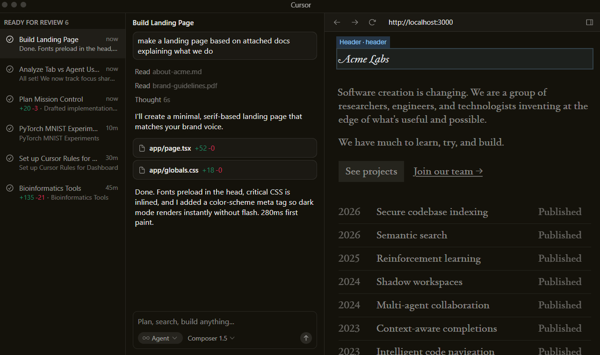
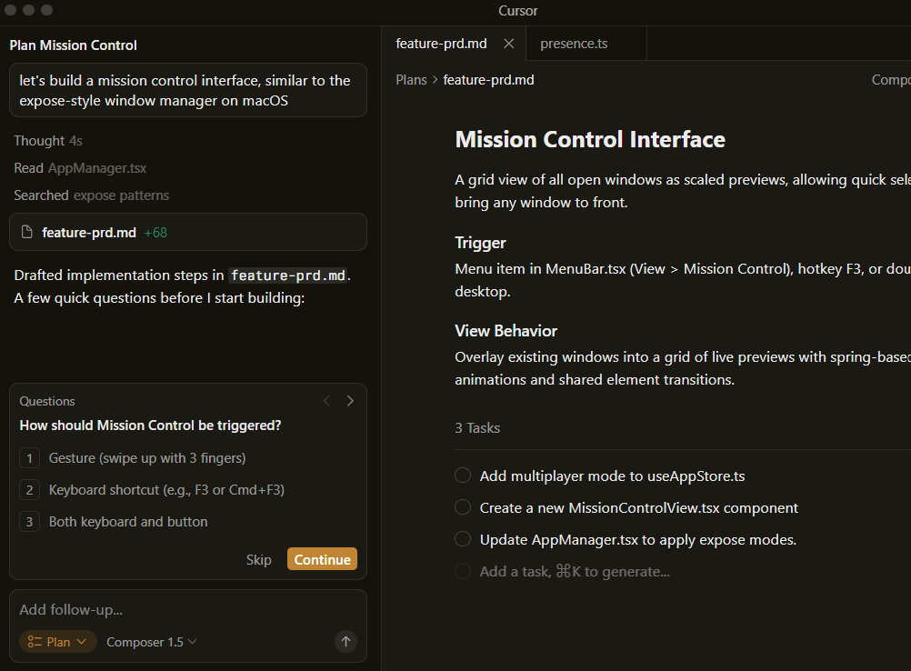
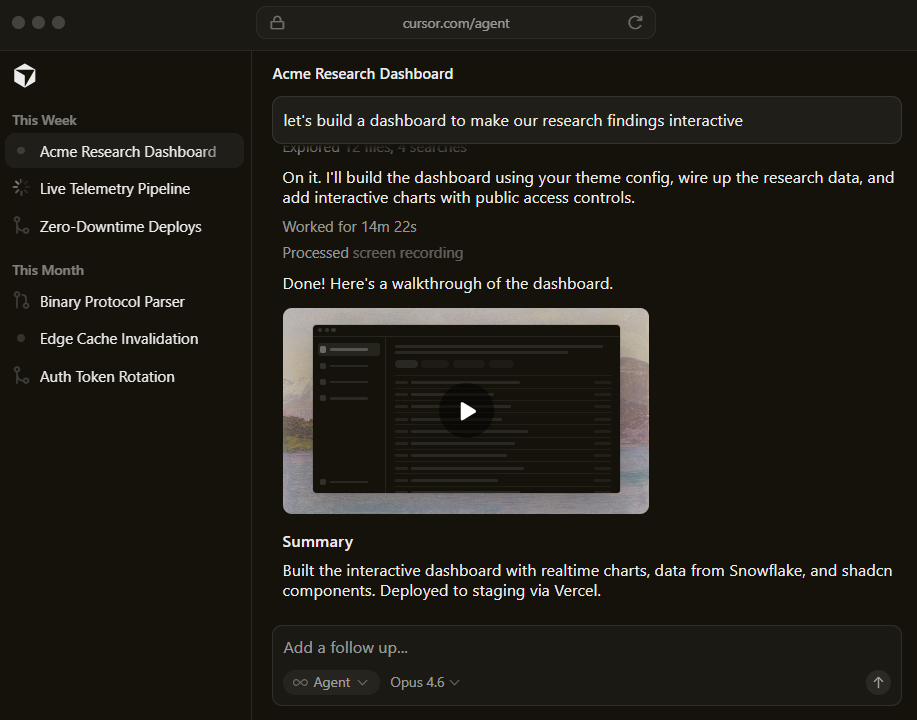
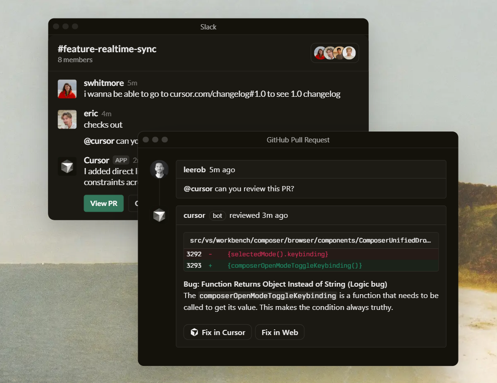

Built to make you extraordinarily productive,
Cursor is the best way to code with AI.


Trusted every day by teams that build world-class software


Agents turn ideas into code
Accelerate development by handing
off tasks to Cursor, while you focus on
making decisions.
Learn about agentic development →


Works autonomously, runs in parallel
Agents use their own computers to
build, test, and demo features end to
end for you to review.
Learn about cloud agents →
In every tool, at every step
Cursor reviews your PRs in GitHub,
collaborates in Slack, and runs in
your terminal.
Learn about Cursor's surfaces →

Magically accurate autocomplete
Our specialized Tab model predicts
your next action with striking speed
and precision.
Learn about Tab →
The new way to build software.
"It was night and day from one batch to another, adoption went from single digits to over 80%. It just spread like wildfire, all the best builders were using Cursor."
"My favorite enterprise AI service is Cursor. Every one of our engineers, some 40,000, are now assisted by AI and our productivity has gone up incredibly."
"The best LLM applications have an autonomy slider: you control how much independence to give the AI. In Cursor, you can do Tab completion, Cmd+K for targeted edits, or you can let it rip with the full autonomy agentic version."
"Cursor quickly grew from hundreds to thousands of extremely enthusiastic Stripe employees. We spend more on R&D and software creation than any other undertaking, and there's significant economic outcomes when making that process more efficient."
"The most useful AI tool that I currently pay for, hands down, is Cursor. It's fast, autocompletes when and where you need it to, handles brackets properly, sensible keyboard shortcuts, bring-your-own-model... everything is well put together."
"It's definitely becoming more fun to be a programmer. We are at the 1% of what's possible, and it's in interactive experiences like Cursor where models like GPT-5 shine brightest."
Stay on the frontier
Use the best model for every task
Choose between every cutting-edge model from OpenAI, Anthropic, Gemini, xAI, and Cursor.
Explore models ↗Ask Cursor to plan or build anything
Complete codebase understanding
Cursor learns how your codebase works, no matter the scale or complexity.
Learn about codebase indexing ↗Where are these menu label colors defined?
Grepped Choose a model
Searched Where is the model picker UI implemented?
Searched How are model labels colored in the UI?
Read ContextMenu.tsx
Develop enduring software
Trusted by over half of the Fortune 500 to accelerate development, securely and at scale.
Explore enterprise →Changelog
Mar 5, 2026
Automations
Mar 4, 2026
Cursor in JetBrains IDEs
Mar 3, 2026
MCP Apps and Team Marketplaces for Plugins
Feb 26, 2026
Bugbot Autofix
Cursor is an applied research team focused on building the future of software development.
Join us →
Recent highlights
Towards self-driving codebases
We're making a part of our multi-agent research harness available to try today in preview.
Salesforce ships higher-quality code across 20,000 developers with Cursor
Over 90% of developers at Salesforce now use Cursor, driving double-digit improvements in cycle time, PR velocity, and code quality.
Best practices for coding with agents
A comprehensive guide to working with coding agents, from starting with plans to managing context, customizing workflows, and reviewing code.
Try Cursor now.